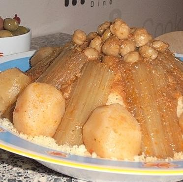

Description
Couscous is made from tiny steamed balls of semolina flour.
Though we think of it as a grain, it’s actually a type of pasta.
Ingredients
Steps
-
To start, bring the cooking liquid (preferably a flavorful chicken or vegetable broth) to a boil in a medium pot. Add a drizzle of olive oil, a pat of butter, and a little salt.
-
Next, add the couscous. (I use 1-3/4 cups liquid to 1-1/2 cups couscous.)
-
Take the pan off the heat, cover, and let the couscous steam for 5 minutes.
-
When you lift the lid, the grains will appear flat in an even layer. Use a fork to fluff it up and break up the clumps for light and fluffy couscous.
Return to top
Return to main page